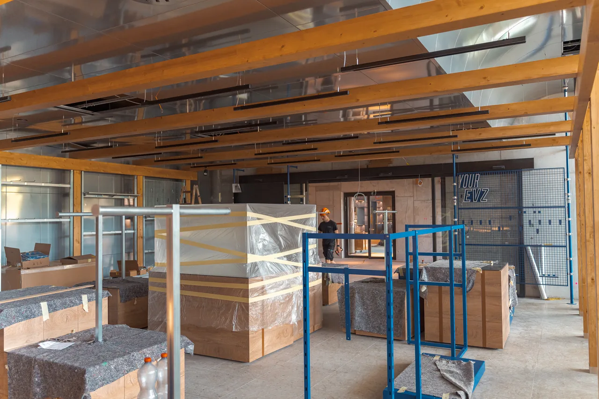
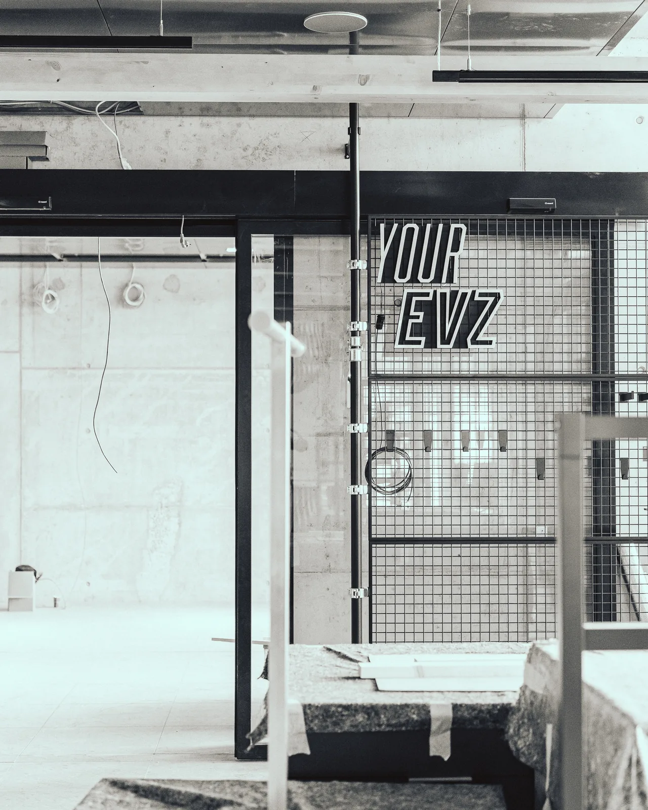
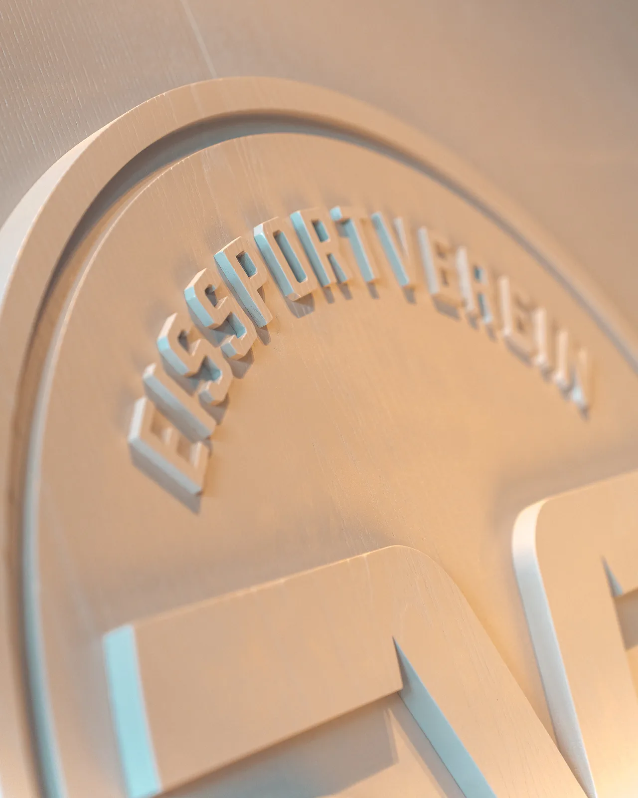
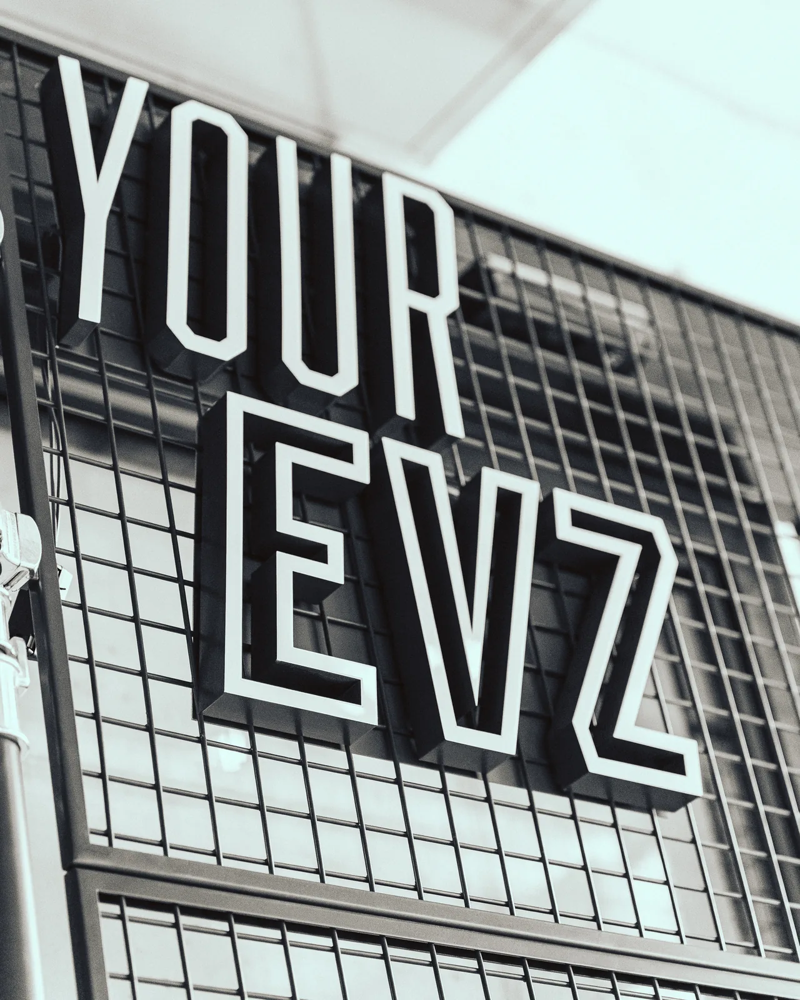

Ein dynamischer Auftakt zum Stadionerlebnis
Im Zentrum der südlichen Erweiterung entsteht ein neuer, eigenständiger Zugang zur OYM hall. Als räumliche Drehscheibe verbindet die «Fan Zone» die unterschiedlichen Nutzungen der Arena: die «Sportsbar 67», den Zugang zu «Tugium» und «Kolins Garden» sowie den weiteren Stadionbereichen.
Die sich geometrisch verjüngende Raumfigur entwickelt eine gezielte räumliche Dynamik, die den Besucher förmlich ins Innere der Arena zieht. Eine seitlich angeordnete, dynamische Lichtinstallation verstärkt diese Bewegung und inszeniert den Weg zum Stadion als atmosphärisches Erlebnis.
So wird die «Fan Zone» weit mehr als ein Erschliessungsraum: Sie wird zum identitätsstiftenden Auftakt des Stadionbesuchs, der Architektur, Bewegung und Emotion zu einem spannungsvollen Raumerlebnis verbindet.


